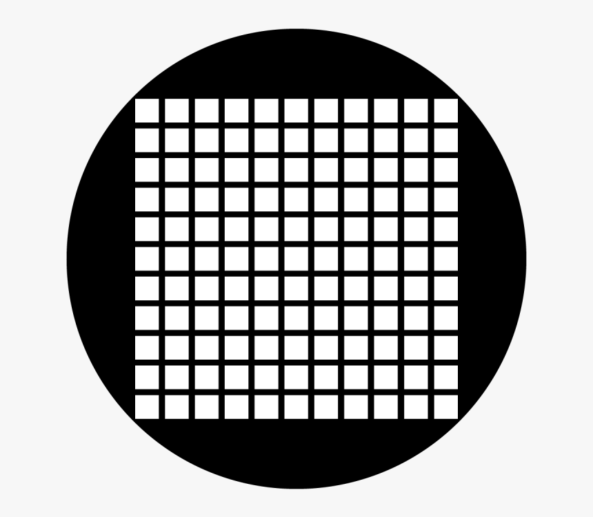

Final Proposal

I personally have interest in music device called launchpad. In my website, instead of the hardware launchpad, I want to create online launchpad that users can easily experience beatmaking and effects triggering online. The website will be looking similar to the device itself.
NEXT